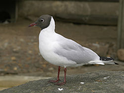
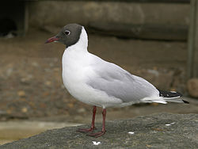

| Black-headed Gull | |
|---|---|
|  | |
| Typical summer plumage displaying the dark head , Antwerp, Belgium | |
| Conservation status | |
| Binomial name | |
| Chroicocephalus ridibundus (Linnaeus, 1766) |
|
| Synonyms | |
|
Larus ridibundus |
| Black-headed Gull | |
|---|---|
|  | |
| Typical summer plumage displaying the dark head , Antwerp, Belgium | |
| Conservation status | |
| Binomial name | |
| Chroicocephalus ridibundus (Linnaeus, 1766) |
|
| Synonyms | |
|
Larus ridibundus |
The Black-headed Gull (Chroicocephalus ridibundus) is a small gull which breeds in much of Europe and Asia, and also in coastal eastern Canada. Most of the population is migratory, wintering further south, but some birds in the milder westernmost areas of Europe are resident. Some birds will also spend the winter in northeastern North America, where it was formerly known as the Common Black-headed Gull. As is the case with many gulls, it had previously been placed in the genus Larus.
This gull is 38–44 cm (15-17½ in) long with a 94–105 cm (37–41 in) wingspan. In flight, the white leading edge to the wing is a good field mark. The summer adult has a chocolate-brown head (not black, despite the name), pale grey body, black tips to the primary wing feathers, and red bill and legs. The hood is lost in winter, leaving just dark vertical streaks. This is a noisy species, especially in colonies, with a familiar "kree-ar" call. Its scientific name means "laughing gull".
It breeds in colonies in large reedbeds or marshes, or on islands in lakes, nesting on the ground. Like most gulls, it is highly gregarious in winter, both when feeding or in evening roosts. It is not a pelagic species and is rarely seen at sea far from coasts.
The Black-headed Gull is a bold and opportunist feeder and will eat insects, fish, seeds, worms, scraps and carrion in towns, or take invertebrates in ploughed fields with equal relish.
This species takes two years to reach maturity. First-year birds have a black terminal tail band, more dark areas in the wings, and, in summer, a less fully developed dark hood. Like most gulls, Black-headed Gulls are long-lived birds, with a maximum age of 63 years recorded in the wild.[2]
The Black-headed Gull is the prefectural bird of Tokyo and the Yurikamome mass transit system is named after it.

.jpg){kind=link}